Normal Wright workspace and actual isolated engineering run. No mocked routes or physical action.
Status: blocked
The updated package opens through the normal workspace.
Expected: Existing workspace navigation visible.
Actual: Normal Workflows and Files controls are available.
raw 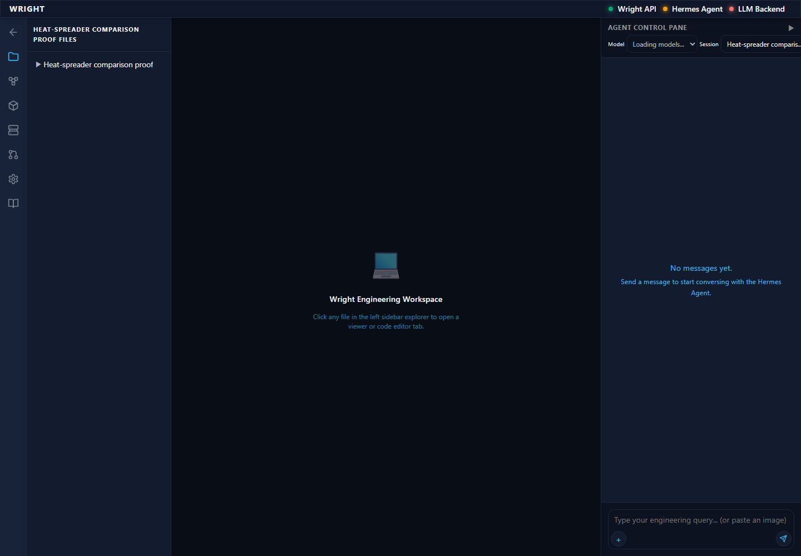
annotated 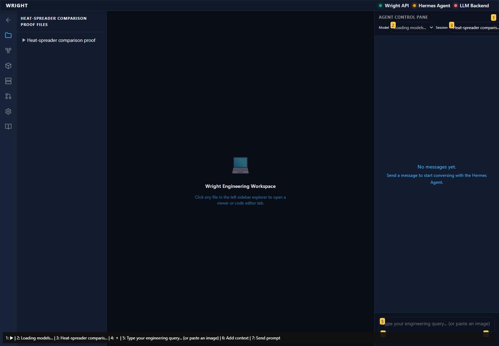
The same exact results render with the desktop file panel open.
Expected: Exact recorded results and docked navigation.
Actual: 18 exact result identities; docked file panel 260px wide.
The file panel no longer consumes the compact document width.
Expected: Navigation closed; document wider than420px; same live frame/results.
Actual: Document 432px; embedded body 382px with 533px scroll width and visible horizontal overflow; same iframe and results.
raw 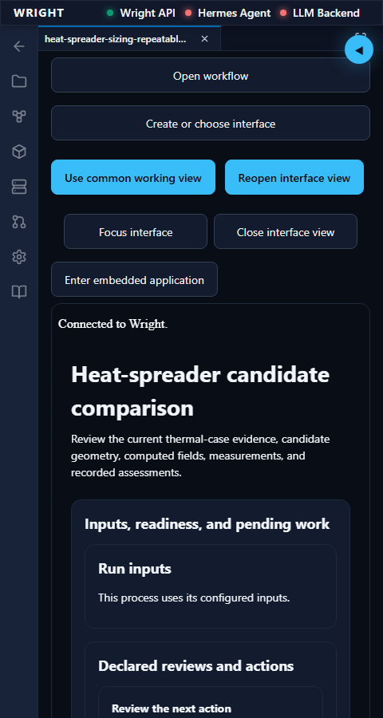
Files opens over the working view without resizing or restarting it.
Expected: Focused close control and overlay navigation; document width unchanged.
Actual: Compact overlay opens; Close is focused; the same iframe keeps its available width.
raw 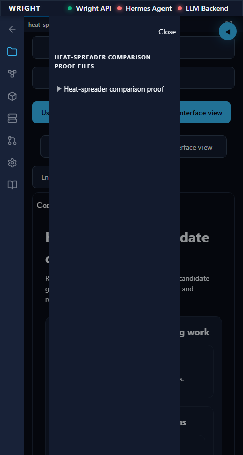
annotated 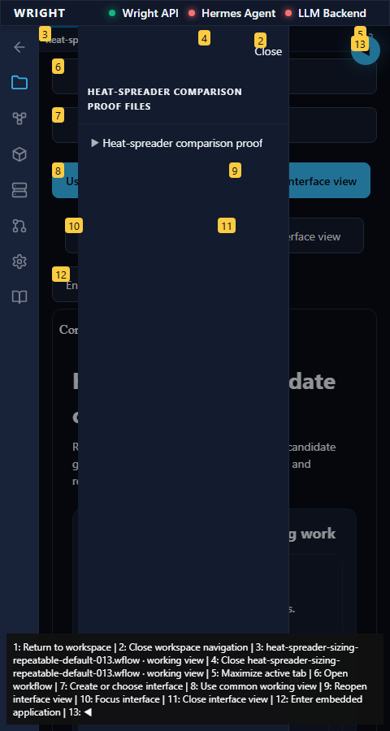
Escape, Close and clicking back to the workspace all dismiss navigation.
Expected: Navigation closes; Escape returns focus; desktop preference remains expanded.
Actual: All three return paths work; Escape restores Files focus; desktop preference and exact results are preserved.
raw 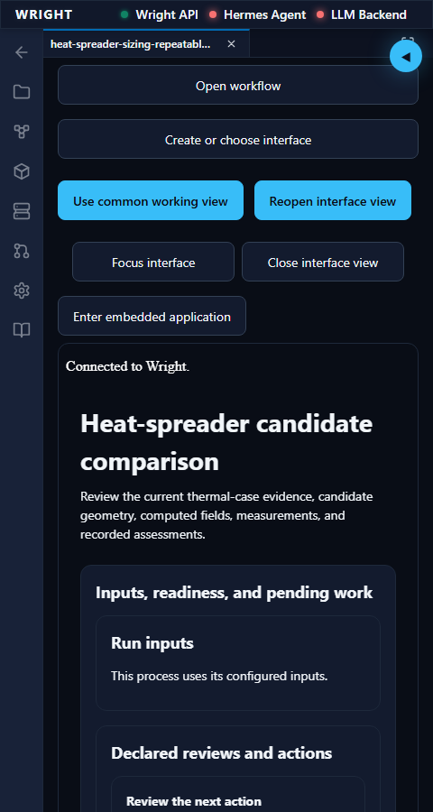
annotated 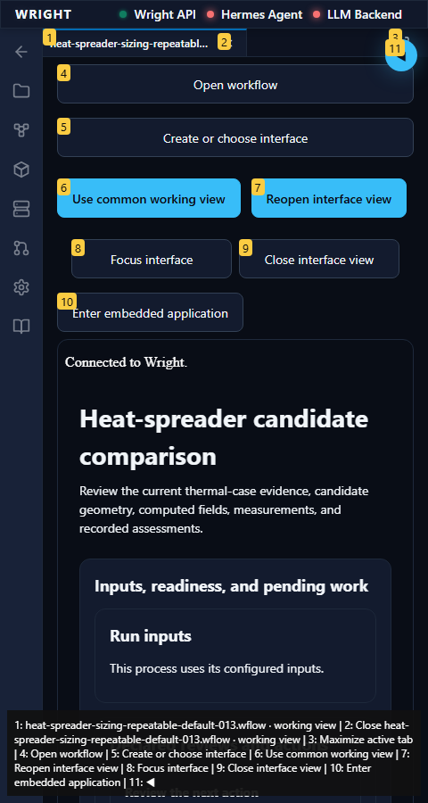
The working view remains available at360px and640px.
Expected: Available document width and same exact results.
Actual: Both compact sizes use the available width with navigation closed; result identities remain exact.
raw 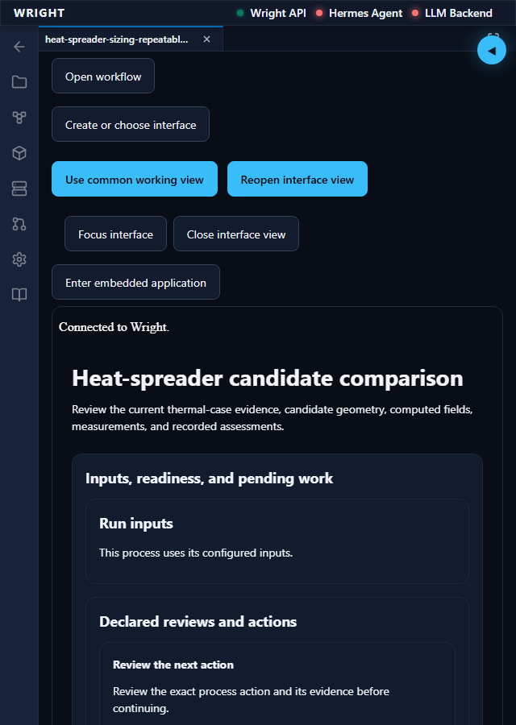
annotated 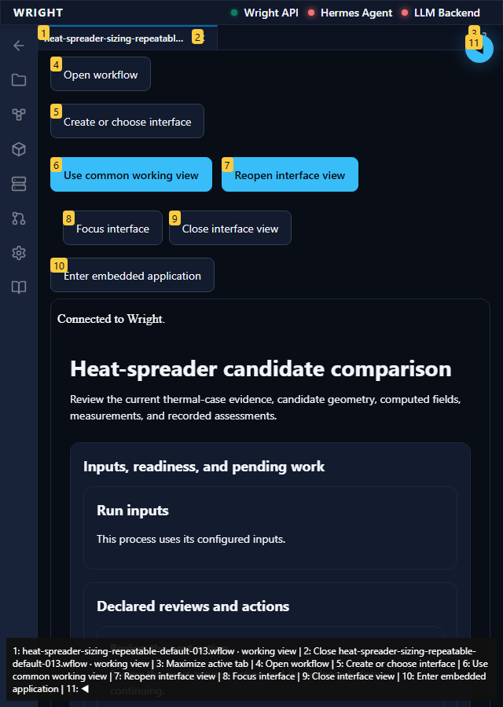
Returning to desktop restores the docked Files preference.
Expected: Original sidebar width and same frame/results.
Actual: The original docked file panel returns; iframe identity and all result IDs are unchanged.
raw 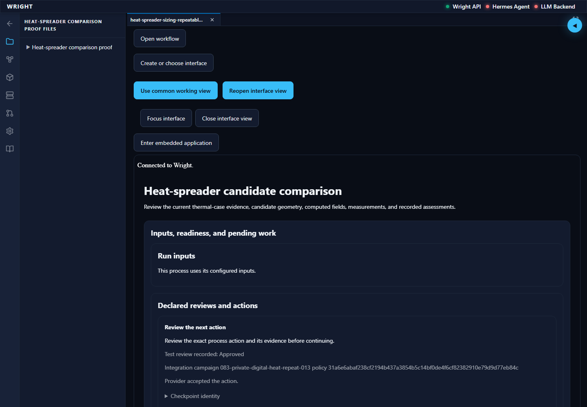
annotated 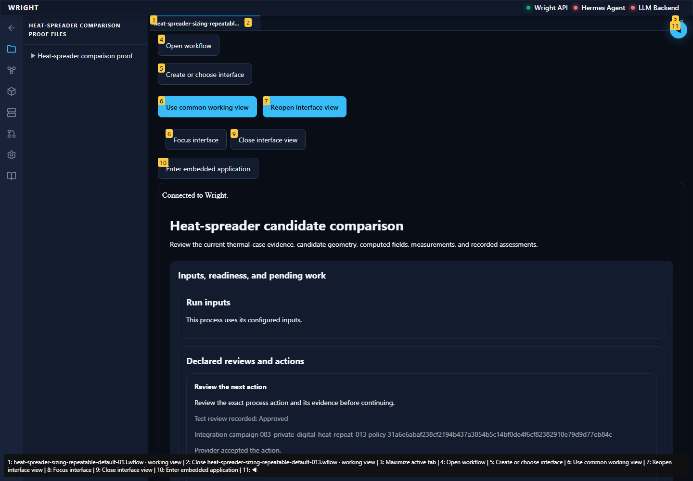
The normal workspace entry did not meet the expected state.
Expected: Workspace and established editor available.
Actual: expect(locator).toBeVisible() failed Locator: getByText('Diagram', { exact: true }) Expected: visible Error: strict mode violation: getByText('Diagram', { exact: true }) resolved to 2 elements: 1) <option value="diagram">Diagram</option> aka getByTestId('workflow-recovery-view-select') 2) <button role="tab" type="button" aria-selected="true" data-testid="workflow-recovery-view-diagram">Diagram</button> aka getByTestId('workflow-recovery-view-diagram') Call log: - Expect "to.be.visible" with timeout 45000ms - waiting for getByText('Diagram', { exact: true })
annotated 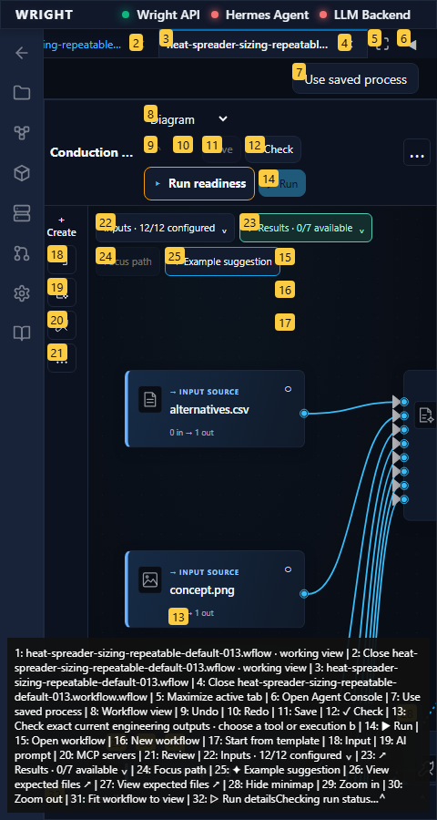